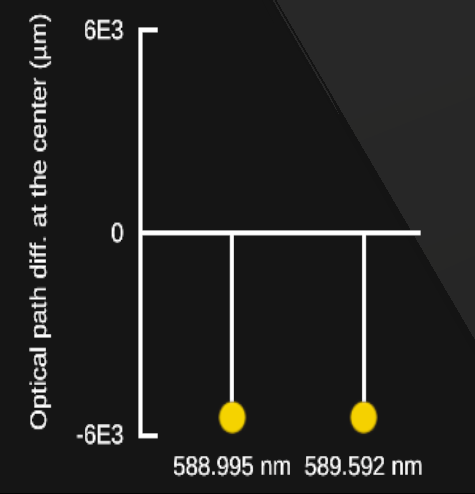

← Back to Home
Exercise 2: Intermediate Concepts
Question 1
Image Selection
Selon vous, quelle image ci-dessous illustre le phénomène d'interférences constructives?
Option A
Option B
Option C
Question 2
Multiple Choice
Quel est le rôle du miroir mobile (miroir en translation) ?
Ajuster la différence de marche entre les deux bras
Modifier la couleur des franges
Supprimer les réflexions parasites
Centrer la figure d’interférences
Question 3
Image Selection
Selon vous, quelle configuration ci-dessous permet d'obtenir des franges d'intereferences rectilignes
Option A
Option B

Option C
Question 4
Multiple Choice
Si les miroirs ne sont pas parfaitement perpendiculaires à la lame semi-réfléchissante, la figure d’interférences sera :
Uniforme
Formée de franges circulaires
Formée de franges rectilignes
Totalement absente
Question 5
Multiple Choice
Le déplacement d’une frange correspond à :
Une modification de la longueur d'onde de la source.
Une variation de la longueur du chemin optique.
Une variation d’intensité de la source lumineuse.
Une interférence destructive totale.
Submit Exercise 2